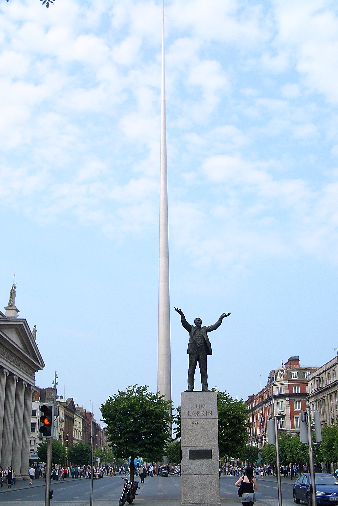
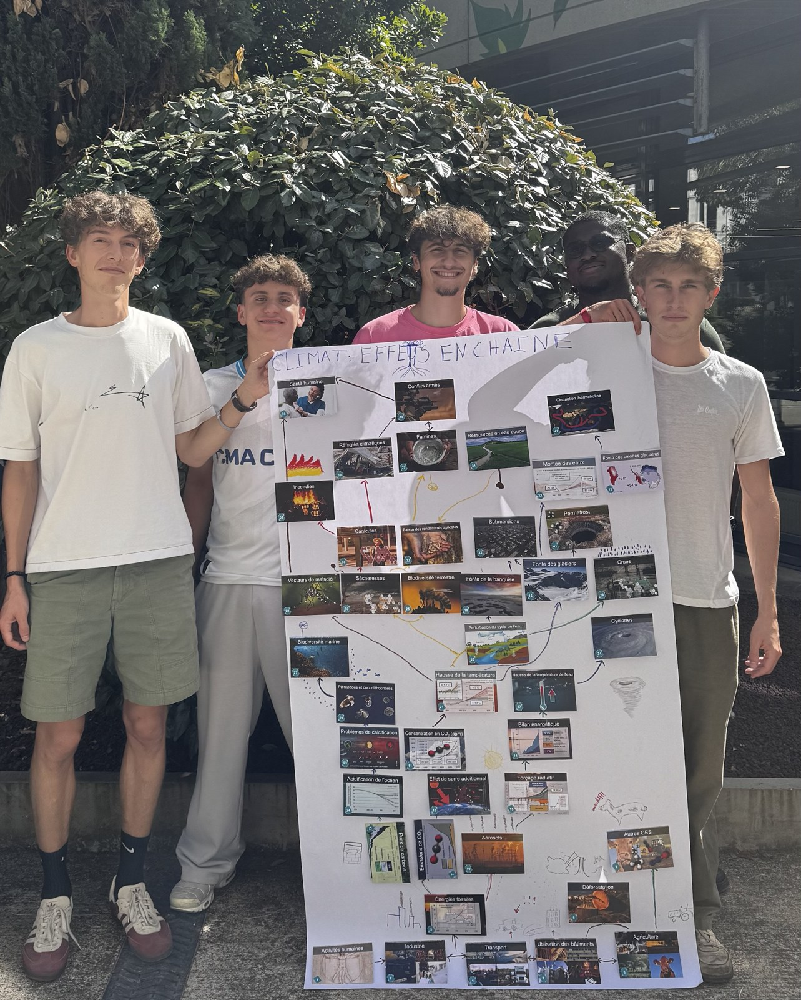

Edgar Piroird
Élève ingénieur à l'ENSEEIHT, spécialité électricité, énergie, électronique et automatique.
Engineering student at ENSEEIHT, specialising in electricity, energy, electronics and automation.
Passionné par l'énergie et l'automatique, je suis élève ingénieur à Toulouse. Ici, vous découvrirez mon parcours, le TIPE que j'ai mené en prépa, mes engagements associatifs et ce qui m'anime en dehors des cours : le sport, la musique et l'automobile.
Driven by energy and automation, I'm an engineering student in Toulouse. Here you'll find my academic path, the TIPE research project I carried out in preparatory class, my volunteering work, and what drives me outside of class: sport, music and cars.
Parcours académiqueAcademic background
-
ENSEEIHT — Ingénieur, spécialité 3EAEngineering degree, 3EA track
École nationale supérieure d'électrotechnique, d'électronique, d'informatique, d'hydraulique et des télécommunications, Toulouse.National School of Electrical Engineering, Electronics, Computer Science, Hydraulics and Telecommunications, Toulouse.
-
Classe préparatoire PSIPreparatory class (PSI) · Camille Vernet
Mathématiques, physique, sciences de l'ingénieur et informatique.Mathematics, physics, engineering sciences and computer science.
-
Baccalauréat Maths / PhysiqueHigh school diploma, Mathematics & Physics · Institution Notre Dame
ProjetsProjects
TIPE : influence de la température sur le coefficient de frottement statique d'un élastomèreTIPE: influence of temperature on the static friction coefficient of an elastomer
Étude expérimentale de la variation du coefficient de frottement statique d'un caoutchouc sur bois, entre 30 et 70 °C, à l'aide d'une étuve, d'un dynamomètre et d'une modélisation Monte Carlo pour estimer les incertitudes. Les mesures montrent que le coefficient augmente avec la température (μs ≈ 0,00284·T + 0,742). L'étude examine aussi l'effet de la surface de contact et, à titre de preuve de concept, celui des stries d'un pneu sur son échauffement.Experimental study of how the static friction coefficient of rubber on wood varies between 30 and 70 °C, using an oven, a dynamometer and a Monte Carlo model to estimate uncertainties. The measurements show that the coefficient increases with temperature (μs ≈ 0.00284·T + 0.742). The study also examines the effect of contact area and, as a proof of concept, the effect of tyre grooves on heating.
Mon rôle : conception du dispositif expérimental, acquisition des mesures, traitement statistique en Python et présentation orale.My role: designing the setup, taking measurements, statistical analysis in Python and oral presentation.
CompétencesSkills
Langages et outilsLanguages and tools
Compétences transversalesSoft skills
MobilitéMobility
Semestre d'études à Dublin, IrlandeOne-semester study period in Dublin, Ireland
Projet de semestre d'échange à Dublin : découvrir un système universitaire étranger, pratiquer l'anglais au quotidien et ouvrir mon parcours à l'international.Planned exchange semester in Dublin: discovering a foreign university system, practicing English daily and opening my studies to an international perspective.

EngagementEngagement
Réalisation d'une fresque du climatClimate fresco workshop
Animation d'un atelier collaboratif de sensibilisation au changement climatique.Facilitation of a collaborative workshop on climate change awareness.

Clean walk
Participation à une collecte de déchets le long du canal.Participation in a litter collection along the canal.

Assistance au procès « King Kong »Attendance at the "King Kong" trial
Participation à un événement autour des violences basées sur le genre et les violences sexuelles (VSS) et de leurs conséquences.Attendance at an event on gender-based and sexual violence (VSS) and its consequences.
Activités et centres d'intérêtActivities and interests
Handball
Pratique du handball au sein de l'AS de l'université.Handball practice within the university sports association.
MusculationWeight training
Entraînement régulier en salle de musculation.Regular training in the gym.
SkiSkiing
Pratique du ski, un loisir que j'apprécie particulièrement.Skiing, an activity I particularly enjoy.
MusiqueMusic
La musique occupe une place importante dans mon quotidien.Music plays an important role in my everyday life.
AutomobileAutomobiles
Une passion pour l'automobile, ses technologies et son histoire.A passion for cars, their technology and their history.